This database contains examples of 2D phantoms and GATE-simulated projection data, together with
the corresponding GATE macro files and simulation details used with GATE v9.0.
For some entries, the full projection matrix is not distributed because of its large size.
In these cases, the corresponding GATE macro file is provided instead, allowing users
to reproduce the simulation and generate the matrix locally.
The simulations were performed at the HPC Facility of The Cyprus Institute and were organized by
Prof. E. Stiliaris
.
| Num | Phantom Description | Phantom 2D-Matrix | Phantom Sinogramme | Projection Matrix | GATE Macro File |
|---|---|---|---|---|---|
| 01 |
Jaszczak Phantom (JS)
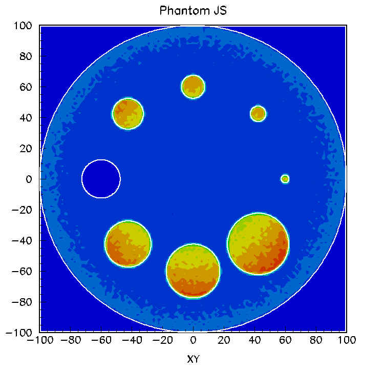 |
ASCII text file containing the phantom matrix.
Download 2D Matrix |
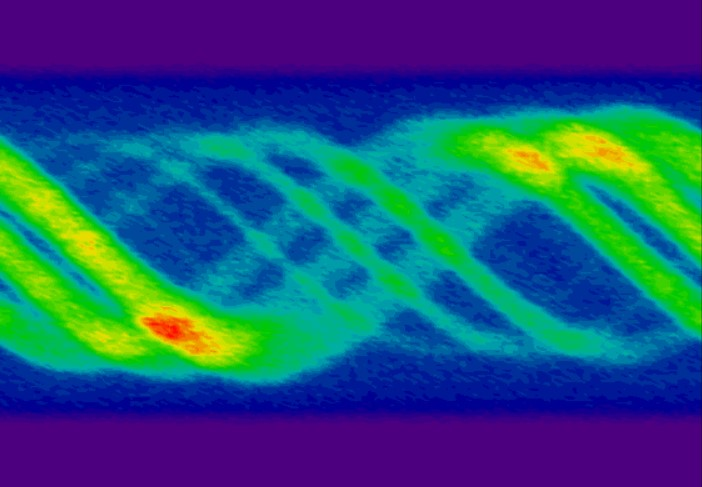
ASCII text file containing the corresponding sinogram.
|
Rows: 128×182
Cols: 128×128 Projection Matrix |
Associated setup:
Angle step: 2.8125° Total projections: 128 Radioactive sources: Total 8 sources, 123I (159 keV), Background SRC = 0, Ratio 1:8 Simulation time: 500 s Phantom activity: 3,790,000 Bq Total photons emitted: 1,895,000,000 Total photons detected: 5,558,242 Physical dimensions: Cylinder, R = 100 mm, h = 10 mm Absorptive material: Water (R = 100 mm) Remarks: 1 cold spot (Cyl:5) GATE Macro File |
| 02 |
Shepp-Logan Phantom (SL)
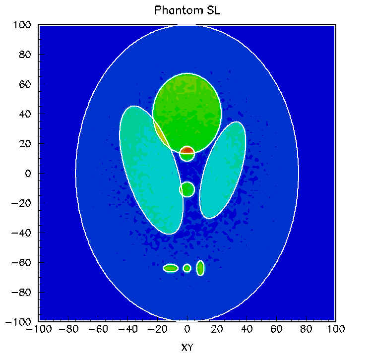 |
ASCII text file containing the phantom matrix.
Matrix size: 128×128 Max count: 990 Physical dimensions: Ellipse a = 75 mm, b = 100 mm Download 2D Matrix |
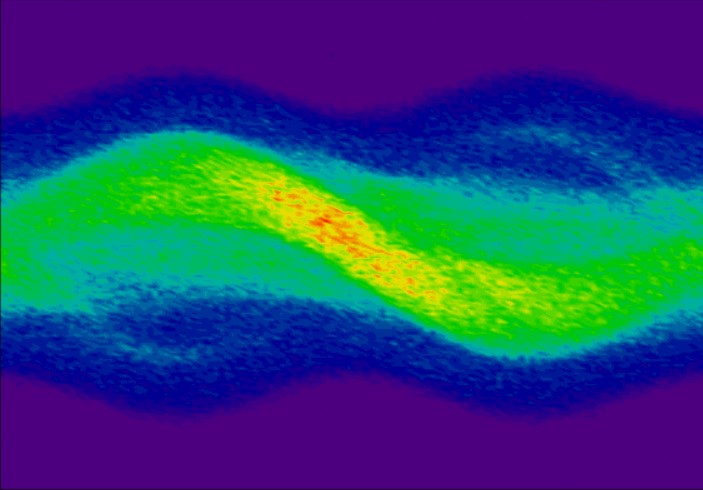
ASCII text file containing the corresponding sinogram.
Angle step: 2.8125° Total projections: 128 Matrix size: 128×182 Max count: 292 |
Rows: 128×182
Cols: 128×128 Projection Matrix |
Associated setup:
Radioactive sources: Total 9 sources, 123I (159 keV), Background SRC = 0, Ratio 1:3.5:7 Simulation time: 150 s Phantom activity: 3,565,000 Bq Total photons emitted: 534,750,000 Total photons detected: 1,531,868 Absorptive material: Water a = 80 mm, b = 100 mm, Zcut = 10 mm Remarks: Hot-spots defined in disk geometry GATE Macro File |
| 03 |
Jaszczak Phantom BKG (JSB)
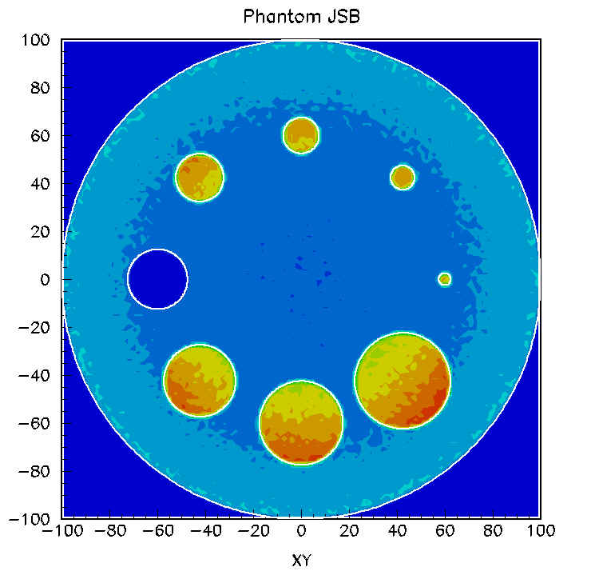 |
ASCII text file containing the phantom matrix.
Matrix size: 128×128 Max count: 2489 Physical dimensions: Cylinder R = 100 mm, h = 10 mm Download 2D Matrix |
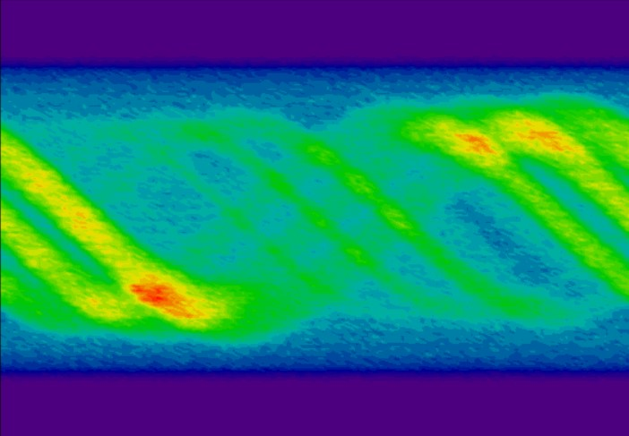
ASCII text file containing the corresponding sinogram.
Angle step: 2.8125° Total projections: 128 Matrix size: 128×182 Max count: 1124 |
Rows: 128×182
Cols: 128×128 Projection Matrix |
Associated setup:
Matrix size: Rows 128×182, Cols 128×128 Angle step: 2.8125° Total projections: 128 Radioactive sources: Total 8 sources, 123I (159 keV), Background SRC = 0, Ratio 1:4 Simulation time: 480 s Phantom activity: 5,790,000 Bq Total photons emitted: 2,779,200,000 Total photons detected: 8,287,553 Physical dimensions: Cylinder, R = 100 mm, h = 10 mm Absorptive material: Water (R = 100 mm) Remarks: Background activity doubled; 1 cold spot (Cyl:5) GATE Macro File |
| 04 |
Shepp-Logan Phantom BKG (SLB)
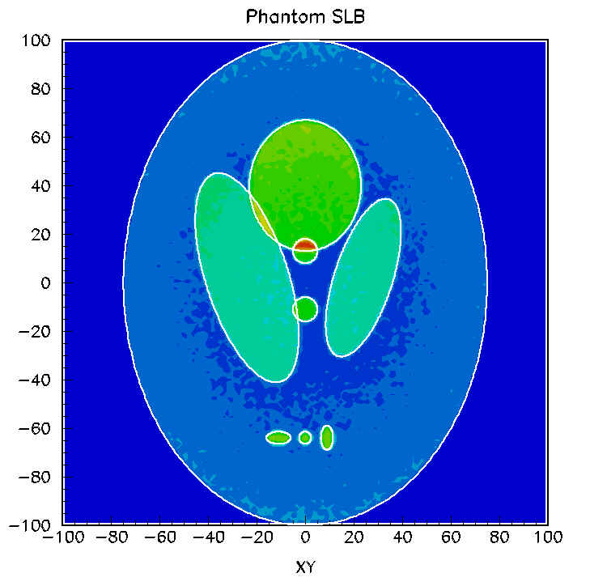 |
ASCII text file containing the phantom matrix.
Matrix size: 128×128 Max count: 1412 Physical dimensions: Ellipse a = 75 mm, b = 100 mm Download 2D Matrix |
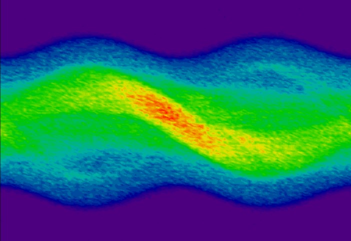
ASCII text file containing the corresponding sinogram.
Angle step: 2.8125° Total projections: 128 Matrix size: 128×182 Max count: 450 |
Rows: 128×182
Cols: 128×128 Projection Matrix |
Associated setup:
Matrix size: Rows 128×182, Cols 128×128 Angle step: 2.8125° Total projections: 128 Radioactive sources: Total 9 sources, 123I (159 keV), Background SRC = 0, Ratio 2:3.5:7 Simulation time: 200 s Phantom activity: 5,065,000 Bq Total photons emitted: 1,013,000,000 Total photons detected: 2,993,730 Physical dimensions: Ellipse, a = 75 mm, b = 100 mm Absorptive material: Water, a = 80 mm, b = 100 mm, Zcut = 10 mm Remarks: Background activity doubled; hot-spots defined in disk geometry GATE Macro File |
| 05 |
Jaszczak Phantom (JSNC)
without Collimator 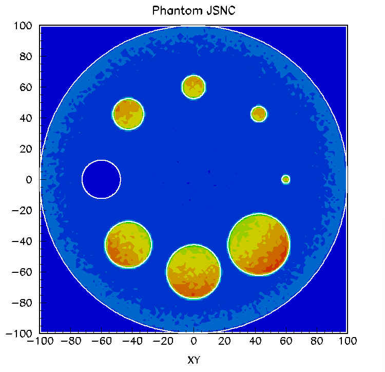 |
ASCII text file containing the phantom matrix.
Matrix size: 128×128 Max count: 2043 Physical dimensions: Cylinder R = 100 mm, h = 10 mm Download 2D Matrix |
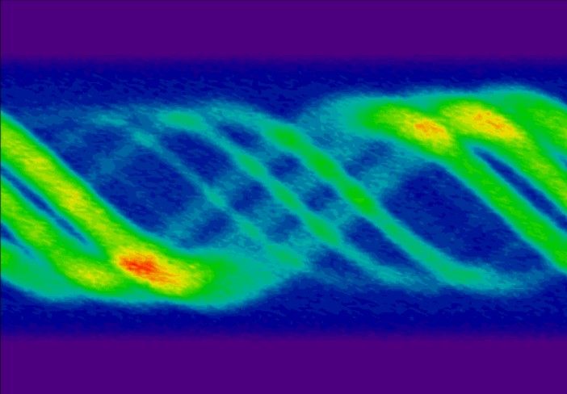
ASCII text file containing the corresponding sinogram.
Angle step: 2.8125° Total projections: 128 Matrix size: 128×182 Max count: 924 |
Rows: 128×182
Cols: 128×128 Projection Matrix |
Associated setup:
Matrix size: Rows 128×182, Cols 128×128 Angle step: 2.8125° Total projections: 128 Radioactive sources: Total 8 sources, 123I (159 keV), Background SRC = 0, Ratio 1:8 Simulation time: 100 s Phantom activity: 3,790,000 Bq Total photons emitted: 379,000,000 Angular cut: Phi < 1.80° Total photons detected: 4,817,492 Physical dimensions: Cylinder, R = 100 mm, h = 10 mm Absorptive material: Water (R = 100 mm) Remarks: Ideal detection as standard JS phantom but without collimator; 1 cold spot (Cyl:5) GATE Macro File |
| 06 |
Shepp-Logan Phantom (SLNC)
without Collimator 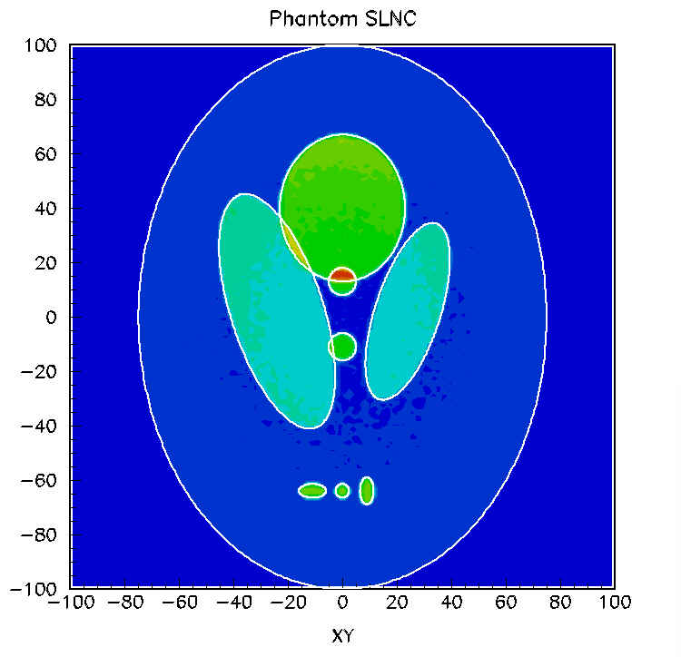 |
ASCII text file containing the phantom matrix.
Matrix size: 128×128 Max count: 2765 Physical dimensions: Ellipse a = 75 mm, b = 100 mm Download 2D Matrix |
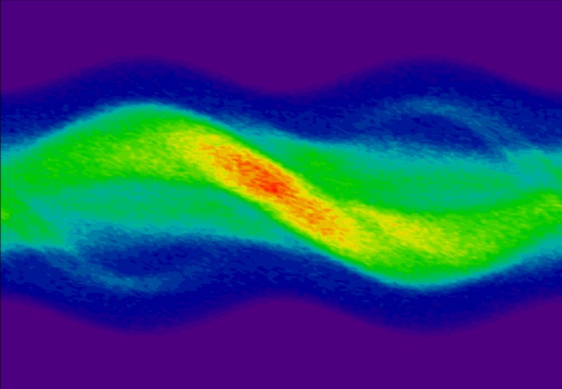
ASCII text file containing the corresponding sinogram.
Angle step: 2.8125° Total projections: 128 Matrix size: 128×182 Max count: 869 |
Rows: 128×182
Cols: 128×128 Projection Matrix |
Associated setup:
Matrix size: Rows 128×182, Cols 128×128 Angle step: 2.8125° Total projections: 128 Radioactive sources: Total 9 sources, 123I (159 keV), Background SRC = 0, Ratio 1:3.5:7 Simulation time: 100 s Phantom activity: 3,565,000 Bq Total photons emitted: 356,500,000 Angular cut: Phi < 1.80° Total photons detected: 4,398,837 Physical dimensions: Ellipse, a = 75 mm, b = 100 mm Absorptive material: Water, a = 80 mm, b = 100 mm, Zcut = 10 mm Remarks: Ideal detection as standard SL phantom but without collimator; hot-spots defined in disk geometry GATE Macro File |
| 07 |
Jaszczak Phantom (JSIC)
Ideal Collimator 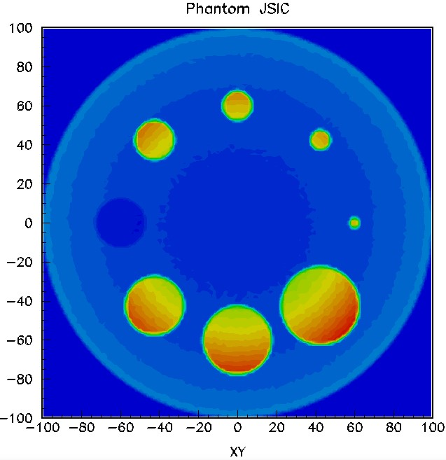 |
ASCII text file containing the phantom matrix.
Matrix size: 128×128 Max count: 62073 Physical dimensions: Cylinder R = 100 mm, h = 10 mm Download 2D Matrix |
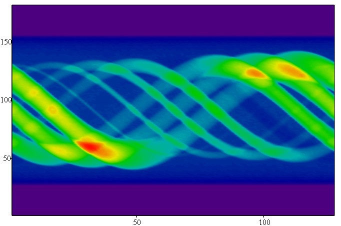
ASCII text file containing the corresponding sinogram.
Angle step: 2.8125° Total projections: 128 Matrix size: 128×182 Max count: 26600 |
Rows: 128×182
Cols: 128×128 Projection Matrix |
Associated setup:
Matrix size: Rows 128×182, Cols 128×128 Angle step: 2.8125° Total projections: 128 Radioactive sources: Total 8 sources, 123I (159 keV), Background SRC = 0, Ratio 1:8 Simulation time: 1.0 s Phantom activity: 7,580,000 Bq Total photons emitted: 485,120,000 Total photons detected: 147,605,293 (30.43%) Physical dimensions: Cylinder, R = 100 mm, h = 10 mm Absorptive material: Water (R = 100 mm) Remarks: Ideal collimator; as standard JS phantom with Phi ~ 0.0 deg; 1 cold spot (Cyl:5) GATE Macro File |
| 08 |
Shepp-Logan Phantom (SLIC)
Ideal Collimator 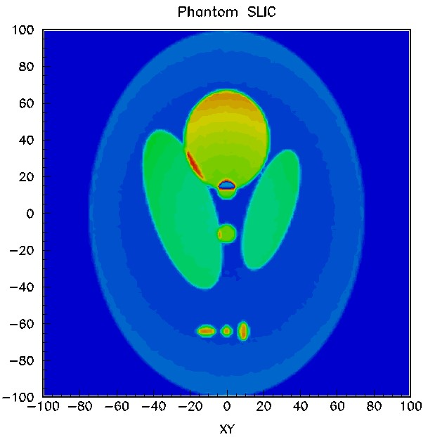 |
ASCII text file containing the phantom matrix.
Matrix size: 128×128 Max count: 82447 Physical dimensions: Ellipse a = 75 mm, b = 100 mm Download 2D Matrix |
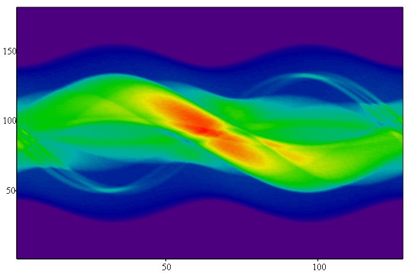
ASCII text file containing the corresponding sinogram.
Angle step: 2.8125° Total projections: 128 Matrix size: 128×182 Max count: 25343 |
Rows: 128×182
Cols: 128×128 Projection Matrix |
Associated setup:
Matrix size: Rows 128×182, Cols 128×128 Angle step: 2.8125° Total projections: 128 Radioactive sources: Total 9 sources, 123I (159 keV), Background SRC = 0, Ratio 1:3.5:7 Simulation time: 1.0 s Phantom activity: 7,130,000 Bq Total photons emitted: 456,320,000 Total photons detected: 137,535,930 (30.14%) Physical dimensions: Ellipse, a = 75 mm, b = 100 mm Absorptive material: Water, a = 80 mm, b = 100 mm, Zcut = 10 mm Remarks: Ideal collimator; as standard SL phantom with Phi ~ 0.0 deg; hot-spots defined in disk geometry GATE Macro File |
| 09 |
Shepp-Logan Phantom (SLICB)
Ideal Collimator High Background 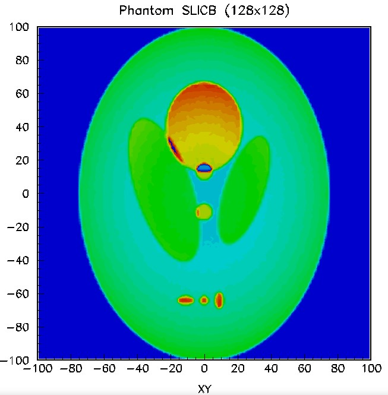 |
ASCII text file containing the phantom matrix.
Matrix size: 128×128 Max count: 48765 Physical dimensions: Ellipse a = 75 mm, b = 100 mm Download 2D Matrix |
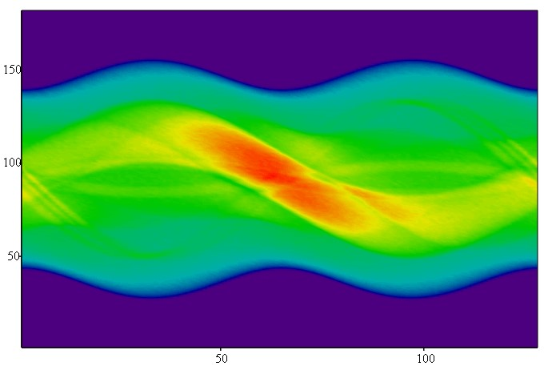
ASCII text file containing the corresponding sinogram.
Angle step: 2.8125° Total projections: 128 Matrix size: 128×182 Max count: 21112 |
Rows: 128×182
Cols: 128×128 Projection Matrix |
Associated setup:
Matrix size: Rows 128×182, Cols 128×128 Angle step: 2.8125° Total projections: 128 Radioactive sources: Total 9 sources, 123I (159 keV), Background SRC = 0, Ratio 4:3.5:7 Simulation time: 0.5 s Phantom activity: 16,130,000 Bq Total photons emitted: 516,160,000 Total photons detected: 167,620,621 (32.47%) Physical dimensions: Ellipse, a = 75 mm, b = 100 mm Absorptive material: Water, a = 80 mm, b = 100 mm, Zcut = 10 mm Remarks: Ideal collimator; high background; as standard SL phantom with Phi ~ 0.0 deg; hot-spots defined in disk geometry GATE Macro File |
| 10 |
Shepp-Logan Phantom (SLICB2)
Ideal Collimator 2x High Background 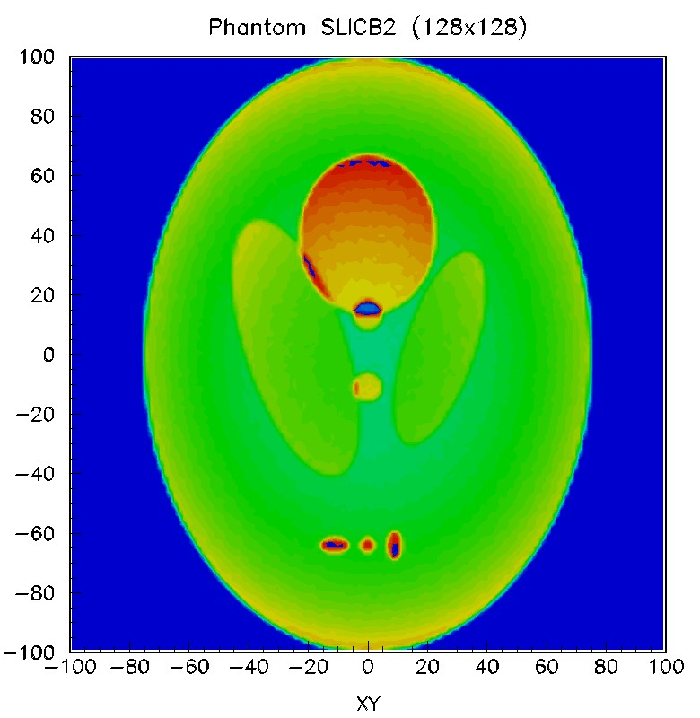 |
ASCII text file containing the phantom matrix.
Matrix size: 128×128 Max count: 35474 Physical dimensions: Ellipse a = 75 mm, b = 100 mm Download 2D Matrix |
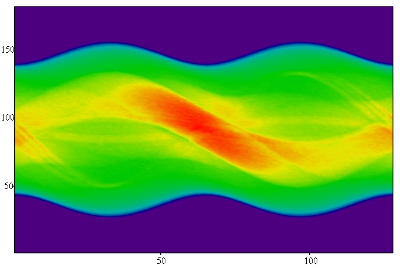
ASCII text file containing the corresponding sinogram.
Angle step: 2.8125° Total projections: 128 Matrix size: 128×182 Max count: 19119 |
Rows: 128×182
Cols: 128×128 Projection Matrix |
Associated setup:
Matrix size: Rows 128×182, Cols 128×128 Angle step: 2.8125° Total projections: 128 Radioactive sources: Total 9 sources, 123I (159 keV), Background SRC = 0, Ratio 8:3.5:7 Simulation time: 0.3 s Phantom activity: 28,130,000 Bq Total photons emitted: 540,096,000 Total photons detected: 179,656,302 (33.26%) Physical dimensions: Ellipse, a = 75 mm, b = 100 mm Absorptive material: Water, a = 80 mm, b = 100 mm, Zcut = 10 mm Remarks: Ideal collimator; 2x high background; as standard SL phantom with Phi ~ 0.0 deg; hot-spots defined in disk geometry GATE Macro File |